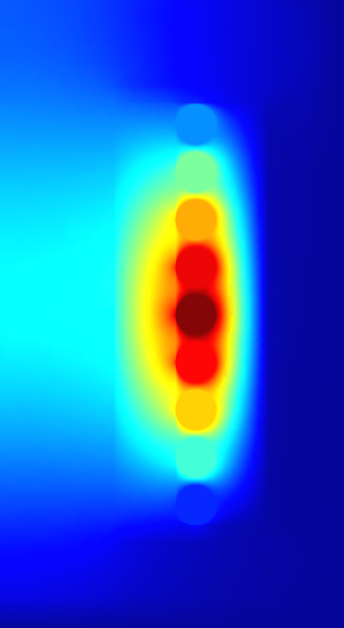

1 FEM Magnetics Toolbox (FEMMT)
Python toolbox to generate preconfigured figures for FEM simulation tools in power electronics.
The toolbox is accessible via python code or a graphical user interface (GUI), which current development status is experimental.
All core shapes are simulated as 2D symmetric cores, as shown in the figure.

1.1 Overview features
1.1.1 Stable features
- Component features:
2D axi-symmetric cylindrical simplification
Arbitrary (distributed) air gap positioning in center leg
Variety of winding interleaving schemes
- Special geometries:
Magnetic shunt (transformer with integrated inductor)
Stacked core (transformer with integrated inductor)
Round litz wire, implemented according to Niyomsatian et al.: Frequency-domain homogenization for litz-wire bundles in finite element calculations
Round and rectangular solid wires
Different winding schemes (hexagonal, left/right, top/down, …)
Parallel connection of solid wires
Insulation distances (winding2core, winding2winding)
Many examples to learn and understand FEMMT
- Databases
Litz wire database
Core geometry database
Conductor materials: temperature curves
Ferrit materials: permeability / permittivity material database (datasheets and own measurements)
- Solver features:
Implemented using ONELAB
Current excitation
Frequency domain solver
Litz wire loss model for proximity and skin effect (Niyomsatian et al.: Frequency-domain homogenization for impedance characterization of litz-wire transformers in 2-D finite element models)
- Core loss calculation for real materials (data from material database)
Amplitude dependent loss angle (Local resolution of complex permeability)
Equivalent permittivity data for eddy current calculations
Effect of dimensional resonance is considered
- Thermal solver
Thermal conduction (Poisson equation)
Fixed temperature and isolation boundary conditions
Verified model for potted core
- Pre/Post processing:
Linear eddy current analysis via input current based FFT
Pre-visualization of ferrite material (measurement) data interpolation
Field visualization in gmsh GUI (magnetic flux density, eddy current losses, …)
Inductance matrix for n-winding transformer
Transformer equivalent diagrams for 2- and 3-winding transformer
- Optimization:
Parallel computing to speed up simulations (no cpu core limitation)
Examples for Pareto optimization to adapt to your own optimization problem
1.1.2 Experimental features (under development)
- Component features:
Reluctance module is currently working for a single optimization example and not fully implemented yet.
- Solver features:
Time domain solver is experimental
- Optimization:
Advanced optimization algorithms by connecting to optuna
- GUI:
Experimental in general
1.1.3 Planned features (Roadmap for 202x)
- Solver features:
Core loss calculation from non-sinusoidal flux
Local temperature dependency (currently only lumped temperature assignment, e.g. general temperature for all windings)
1.1.4 Not supported features
- Not supported component features:
Toroidal core
- Not supported solver features:
Voltage excitation
1.2 Documentation
Please have a look at the documentation. You will find tutorials and a function description.
1.3 Literature
1.4 Installation
To run FEMMT python (version 3.10 or above) and onelab is needed.
1.4.1 ONELAB installation
Go to https://onelab.info/
Download the Desktop Version for your OS (Windows, Linux or macOS)
Unpack the software and remember the file path. This will be needed later when installing FEMMT.
1.4.2 Further steps for macOS(ARM)
Go to https://onelab.info/
Download the Desktop Version for Windows
Copy the “conveks.py” and “Onelab.py” files and paste them into the “onelab” folder
Go to http://getdp.info/
Download the macOS(ARM) Version
Open the downloaded folder, navigate to “bin” and copy the “getdp” application file
Paste the copied file into your “onelab” folder
1.4.3 Install FEMMT
FEMMT can be installed using the python pip package manager. This is the stable release version (recommended).
pip install femmt
For working with the latest version, refer to the documentation.
1.5 Minimal example
This toolbox is able to build a complete FEM simulation from simple
Python code. The following figure shows the Python code on the left and
the corresponding FEM simulation on the right. 
To run a minimal example please have a look at the examples.
1.6 GUI (Experimental)
There is a first preview for a GUI. Installing this is a bit cumbersome at first, but will be simplified in the future:
Download the complete repository via
Code->Download ZIPand unpack it.Or clone the repository
Install the development version of femmt using
pip install -e .Run python
.../path-to_femmt/femmt/gui/femmt_gui.py
Please note, the GUI is experimental.

1.7 Troubleshooting
If the working directory is within OneDrive, there are problems writing .dat files, which are basic for FEMMT. The following error messages appear:
The system cannot find the file specified: your_directory/femmt/electro_magnetic/Strands_Coefficients/coeff/pB_RS_la0.6_4layer.dat
FileNotFoundError: [Errno 2] No such file or directory: your_directory/results/values/j2F_1.dat
The solution is to place the working directory of FEMMT including the Python virtual environment outside the OneDrive folder.
1.8 Bug Reports
Please use the issues report button within github to report bugs.
1.9 Contributing
Pull requests are welcome. For major changes, please open an issue first to discuss what you would like to change. For contributing, please refer to this section.
1.10 Changelog
Find the changelog here.
1.11 License
1.12 History and project status
This project was initially written in matlab using FEMM simulation tool. It became clear that the project was no longer a small project. The project should be completely rewritten, because many new complex levels have been added. To place the project in the open source world, the programming language python is used.
1.13 FEMMT development version (for developers only)
Note
If you want to make changes to the code of FEMMT (e.g. to fix a bug), you should read this section carefully.
If you simply want to use this toolbox as a user (simulating magnetic components), skip this section.
This is the latest development version with the latest features. Note: You may need to install git. Also have a look at the developers notes.
FEMMT is using the material database. To use the latest version for developing, also install the material database in developer mode. It is important to first install the material database, second install FEMMT. Note the dot . in the following instructions.
cd /Documents/Folder/of/Interest/materialdatabase
git clone git@github.com:upb-lea/materialdatabase.git
cd materialdatabase
pip install -e .
After the material database has been installed, install FEMMT:
cd /Documents/Folder/of/Interest/
git clone git@github.com:upb-lea/FEM_Magnetics_Toolbox.git
cd FEM_Magnetics_Toolbox/
pip install -e .
1.13.1 Basics
The magnetic component can be an inductor, a transformer, or a transformer with integrated stray path. The parameterization process is divided into the following steps:
Choose the simulation type, whether it’s frequency domain or time domain simulation,
set core parameters (geometry, material),
set air gap parameters (position, height),
set insulation distances
set conductor parameters (litz/solid wire),
start the frequency domain simulation by specifying the given frequencies, currents, and phases, and start the time domain simulation by specifying the given currents, and time parameters.
Please have a look at the basic_inductor example for frequency domain simulation, and at the basic_inductor_time_domain example for time domain simulation.
The examples contain among other things:
Geometries: Coil, transformer, transformer with integrated stray path,
wire and stranded wire definition,
air gaps definition,
excitation with different frequencies, amplitudes and phases for frequency domain simulation, and with amplitudes and time steps for time domain simulation.
The simulation results can be found in working_directory/results/result_log_electro_magnetic.json. Working directory can either be set by the user otherwise it located at /python-side-packages-path/femmt. In it you can find
power loss in the core: hysteresis losses and eddy current losses,
losses per winding and for each individual winding,
self- and mutual inductances.
For a more detailed guide on how to create a model, please have a look here.
1.13.2 Counting arrow system
Defined as depicted here:
1.14 GUI (Experimental)
There is a first preview for a GUI. Installing this is a bit cumbersome at first, but will be simplified in the future:
Download the complete repository via
Code->Download ZIPand unpack it.install the development version of femmt as described above
run python
downloads/path-to_femmt/femmt/gui/femmt_gui.py
Please note, the GUI is experimental.
2 User Guide: How to create a FEMMT model
This guide explains how a model can be created in femmt and provides all the necessary information to work with femmt. Many examples for femmt models can be found in the example folder.
2.1 Working directory
Every femmt model has a working directory which can be set when creating
an instance of the femmt base class called MagneticComponent. When
running the simulation many files will be created in the working
directory including the model, mesh and multiple result files. It also
contains the electro_magnetic_log.json which the most important
simulation results (e.g. losses, inductance, …).
Besides the working directory a MagneticComponent also needs a
ComponentType. Currently this can be ‘Inductor’, ‘Transformer’ or
‘IntegratedTransformer’.
This results to the following code:
import femmt as fmt
geo = fmt.MagneticComponent(simulation_type=fmt.SimulationType.FreqDomain,
component_type=fmt.ComponentType.Transformer, working_directory=working_directory,
verbosity=fmt.Verbosity.ToConsole, is_gui=is_test)
The simulation_type specifies the type of simulation to be performed.
If set to
FreqDomain, indicating a frequency domain simulation.If set to
TimeDomain, indicating a time domain simulations.
The Verbosity controls the level of detail in the output.
If set to
ToConsole, all output messages are shown in the commend line .If set to
ToFile, all output messages are written to files.If set to
Silent, no command line outputs are shown.
This simple feature significantly speeds up simulation time, especially for many automated simulations.
2.2 Creating a core
In general, only 2D rotationally symmetric geometries are represented in FEMMT. Other core shapes must first be converted to a 2D rotationally symmetric shape. The corresponding values for this (diameter core, dimensions of the winding window) are taken from the data sheet. Afterwards, a corresponding geometry is generated automatically.
The following graphics always show only a sectional view of the core geometry.
After creating a MagneticComponent, a core needs to be created. The core needs spatial parameters as well as material parameters. The neccessary spatial parameters are shown in the image below.

Core spatial parameters can be entered manually but FEMMT provides a database of different practical cores. This database can be accessed using:
core_db = fmt.core_database()["PQ 40/40"]
Now the core object can be created and added to the model (geo object)
core_dimensions = fmt.dtos.SingleCoreDimensions(core_inner_diameter=core_db["core_inner_diameter"],
window_w=core_db["window_w"],
window_h=core_db["window_h"],
core_h=core_db["core_h"])
core = fmt.Core(core_type=fmt.CoreType.Single,
core_dimensions=core_dimensions,
detailed_core_model=False,
material=mdb.Material.N49, temperature=45, frequency=inductor_frequency,
permeability_datasource=fmt.MaterialDataSource.Measurement,
permeability_datatype=fmt.MeasurementDataType.ComplexPermeability,
permeability_measurement_setup=mdb.MeasurementSetup.LEA_LK,
permittivity_datasource=fmt.MaterialDataSource.Measurement,
permittivity_datatype=fmt.MeasurementDataType.ComplexPermittivity,
permittivity_measurement_setup=mdb.MeasurementSetup.LEA_LK, mdb_verbosity=fmt.Verbosity.Silent)
geo.set_core(core)
2.2.1 Material database
The material database was already introduced in the upper code example with the material= parameter. The temperature as well as the frequency are necessary to pick the corresponding data from the datasheet.
2.3 Adding air gaps to the core
In the next steps air gaps can be added. Currently it is only possible to add air gaps in the center leg, there for the ‘AirGapLegPosition’ is always ‘CenterLeg’. To set the vertical position for a air gap multiple methods are available:
Center: The air gap will always be positioned in the center
Percent: A value between 0 and 100 can be given. Where 0 represents the bottom end and 100 the top end of the winding window.
Manually: The specific y-coordinate needs to be entered manually.

Have a look at the following example on how to create an air gap object and add it to the model:
air_gaps = fmt.AirGaps(method=fmt.AirGapMethod.Percent, core=core)
air_gaps.add_air_gap(leg_position=fmt.AirGapLegPosition.CenterLeg, height=0.0005, position_value=50)
geo.set_air_gaps(air_gaps)
Adding an air_gap object is not necessary. If no air gap is needed, don’t add the air gap object to the model.
2.4 Set insulation distances
There are multiple insulations implemented in femmt. Some of them are created as rectangles in the model, some are just adding an offset to the windings.
Core insulations are the insulations which are created as rectangles in
the model. 4 core insulations will be added: top, bottom, left, right.
The distance of those values can be set with the add_core_insulations
function. The order of add_core_insulations is as follow : top, bottom, left, and right.
Furthermore there are offset insulations between each turn in the same
winding, a distance between 2 windings in one virtual winding window and
a distance between each virtual winding window. The first two are set
using the add_winding_insulations functions, the last one when
creating such a Virtual Winding Windows (vww) .
The add_winding_insulations contains the inner winding insulation, which is a nested lists representing
the insulations between turns of the same winding. Importantly, these values are not arranged according to the
sequence in which conductors are added to each winding. Instead, the organization is based on the winding number
with conductors sorted in ascending order of these numbers. Thus, the first sublist (index 0) corresponds to
the winding with the lowest number, the second sublist (index 1) to the winding with the next lowest number, and so on.
This is how to create an insulation object and add certain insulations:
insulation = fmt.Insulation(flag_insulation=True)
insulation.add_core_insulations(0.001, 0.001, 0.002, 0.001)
insulation.add_winding_insulations([[0.0002, 0.001],[0.001, 0.0002]])
geo.set_insulation(insulation)
The spatial parameters for the insulation, as well as for every other function in FEMMT, are always in SI-Units, in this case metres.
2.5 Add windings to the winding window
In order to understand the way winding windows work in femmt, the concept of virtual winding windows must be explained:
2.5.1 Virtual Winding Windows
For every femmt model there is always one winding window, which is a 2D
representation of the 3D rotated winding window. This winding window can
be split into multiple virtual winding windows which are used to draw
the conductors. The split_window function has multiple ways to split a winding window into:
NoSplit: Only 1 virtual winding window will be returned and it has the same size as the real winding window.
HorizontalSplit: 2 virtual winding windows will be returned, one for the top and one for the bottom part. The height of the splitting line can be set using a horizontal_split_factor (value between 0 and 1)
VerticalSplit: 2 virtual winding windows will be returned, one for the left and one for the right part. The radius (x-coordinate) of the splitting line can be set using a vertical_split_factor (value between 0 and 1)
HorizontalAndVerticalSplit: 4 virtual winding windows are returned. One for each corner (in the following order): top_left, top_right, bottom_left, bottom_right. In this case the horizontal and vertical split factors can be used to set the sizes of each grid cell.

In addition to that 2 virtual winding windows can be combined to one (this is not possible for (top_left, bottom_right) or (top_right, bottom_left) combinations). This is done using the combine_vww() function of the WindingWindow class.
Each virtual winding window can be filled with either one single winding or one interleaved winding.
A winding window with only one virtual winding window can be craeted like this:
winding_window = fmt.WindingWindow(core, insulation)
vww = winding_window.split_window(fmt.WindingWindowSplit.NoSplit)
Additionally, the NCellsSplit function provides even more flexibility, allowing
the winding window to be split into N columns horizontally. The distance
between the virtual winding windows, horizontal split factors, and the
vertical split factor can be specified. A winding window with 12 columns horizontally can be created like this:
winding_window = fmt.WindingWindow(core, insulation)
cells = winding_window.NCellsSplit(0, [1 / 6, 2 / 6, 3 / 6, 4 / 6, 5 / 6], 0.5)
Furthermore, the NHorizontalAndVerticalSplit function introduces more advanced splitting capabilities
by allowing the winding window to be split into N columns horizontally,with each having M_N rows (vertically).
Users can specify the positions of borders between columns and rows
to customize the layout of the resulting virtual winding windows. Creating a winding window with three columns,
where the second column is further divided into three rows, can be achieved with the following code:
winding_window = fmt.WindingWindow(core, insulation)
cells = winding_window.NHorizontalAndVerticalSplit(horizontal_split_factors=[0.48, 0.75],
vertical_split_factors=[None, [0.5, 0.85], None])
2.5.2 Winding types and winding schemes
The following table gives an overview of the different winding types, winding schemes and conductor arrangements:
WindingType |
ConductorType |
WindingScheme |
ConductorArrangement |
WrapParaType |
status |
description |
|---|---|---|---|---|---|---|
Interleaved |
Always needs 2 conductors |
|||||
RoundSolid, RoundLitz |
||||||
Bifilar |
not implemented |
TODO |
||||
VerticalAlternating |
not implemented |
primary and secondary winding are interleaved vertically (rows) |
||||
HorizontalAlternating |
implemented |
primary and secondary winding are interleaved horizontally (cols) |
||||
VerticalStacked |
implemented |
primary winding is drawn bottom to top, seoncdary winmding is drawn top to bottom |
||||
Square |
“ |
|||||
Hexagonal |
“ |
|||||
RectangularSolid |
not implemented |
|||||
Single |
Always needs 1 conductor |
|||||
RoundSolid, RoundLitz |
||||||
None |
implemented |
|||||
Square |
“ |
|||||
Square full width |
“ |
|||||
Hexagonal |
“ |
|||||
RectangularSolid |
||||||
Full |
implemented |
whole virtual winding window contains is filled with one turn |
||||
FoilHorizontal (stacked) |
implemented |
foils are very long (x-axis) and drawn along y-axis |
||||
Square full width |
not implemented |
foils are drawn along x-axis first and then along y-axis |
||||
FoilVertical |
implemented |
foils are very tall (y-axis) and drawn along x-axis |
||||
Fixed Thickness |
“ |
|||||
Interpolate |
“ |
2.5.2.1 ConductorArrangement
Square: conductors are set in next to each other in a grid
Hexagonal: similar to square but in this case the conductors frpmo the next column slips in the free space between two conductors from the first column
Square full width: conducors are first drawn along x-axis and then y-axis
2.5.2.2 WrapParaType
Fixed thickness: TODO
Interpolate: TODO
Images for the possible winding types can be found here.
2.6 Add conductors
When creating an instance of the class Conductor a winding number and a conductivity needs to be given:
The winding number represents the index of the winding (e.g. primary->1, secondary->2, tertiary->3). As an example: When starting a simulation on a transformer a current needs to be given, this is done in a list. The first index of the current’s list will be set to the winding with the lowest winding number, the second index of the list to the winding with the second lowest winding number and so on.
The conductivity can be set using the Conductivity enum where one of two possible materials need to be selected:
Copper
Aluminium
After creating an conductor object it is necessary to add a conductor to it. As already shown in the winding types table 3 different conducors can be set:
RoundSolid
RoundLitz
RectangularSolid
To create a conductor have a look at the following code example:
winding1 = fmt.Conductor(winding_number=0, conductivity=fmt.Conductivity.Copper)
winding1.set_solid_round_conductor(conductor_radius=0.0011, conductor_arrangement=fmt.ConductorArrangement.Square)
2.6.1 Add conductors to virtual winding windows
Now the conductors need to be added to the virtual winding windows with the corresponding winding type and winding scheme. In this case the set_winding() or set_interleaved_winding() function needs to be called. In the set_interleaved_winding() function an insulation distance can also be set. This value represents the distance between conductors from the primary and secondary side.
vww.set_winding(winding, 14, None, fmt.Align.ToEdges, placing_strategy=fmt.ConductorDistribution.VerticalUpward_HorizontalRightward, zigzag=False)
If you have a look at the winding types and winding schemes table a winding scheme is not needed when creating a round solid conductor in single winding. Therefore the value is set to None.
In the configuration of single windings using round solid or litz wire conductors, the focus is on two main aspects: alignment and how the conductors are placed.
2.6.1.1 Alignment
Alignment pertains to how the set of conductors is positioned within the winding window:
Align.ToEdges: Ensures the outermost conductors are close to the winding window’s edges.
Align.CenterOnHorizontalAxis: Center the winding along the window’s horizontal axis, for balanced distribution.
Align.CenterOnVerticalAxis: Center the winding along the window’s vertical axis, for balanced distribution.
2.6.1.2 Placement Strategies
The strategy for placing conductors is named based on the initial direction and subsequent movement. It is only applied if the winding type is Single.
For RoundSolid and RoundLitz conductors, the placement strategies are as follows:
VerticalUpward_HorizontalRightward: Placement starts at the bottom, moving upward vertically, then shifts rightward horizontally for the next column.
VerticalUpward_HorizontalLeftward: Placement starts at the bottom, moving upward vertically, then shifts leftward horizontally for the next column.
VerticalDownward_HorizontalRightward: Begins placement from the top, moving downward, with a rightward shift for each new column.
VerticalDownward_HorizontalLeftward: Begins placement from the top, moving downward, with a leftward shift for each new column.
HorizontalRightward_VerticalUpward: Starts on the left side, moving rightward, then upward for each new row.
HorizontalRightward_VerticalDownward: Starts on the left side, moving rightward, then downward for each new row.
HorizontalLeftward_VerticalUpward: Starts on the right side, moving leftward, then upward for each new row.
HorizontalLeftward_VerticalDownward: Starts on the right side, moving leftward, then downward for each new row.
For RectangularSolid conductors, where the winding scheme is FoilVertical or FoilHorizontal, the placement strategies are as follows:
FoilVerticalDistribution: These strategies are used when distributing rectangular foil conductors vertically.
HorizontalRightward: Begins placement from the left of the winding window, moving horizontally rightward for each conductor.
HorizontalLeftward: Begins placement from the right of the winding window, moving horizontally leftward for each conductor.
FoilHorizontalDistribution: These strategies are used when distributing rectangular foil conductors horizontally.
VerticalUpward: Begins placement from the bottom of the winding window, moving upward for each conductor.
VerticalDownward: Begins placement from the top of the winding window, moving downward for each conductor.
2.6.1.3 Zigzag Condition
Zigzag placement introduces an alternating pattern in the layout:
After completing a row or column, the direction alternates (e.g., if moving upward initially, the next is downward).
The
zigzagparameter is optional and defaults toFalse. It can be omitted if a zigzag movement is not needed.
It can only be used for RoundSolid and RoundLitz conductors when the winding type is Single.
Before the simulation, the winding window must be added to the model:
geo.set_winding_windows([winding_window])
2.7 Create model and start simulation
After every needed component is added to the model the model can be created. This is done using the create_model() function. The frequency is needed there because of the mesh which is adapted according to the skin depth. In addition to that a boolean can be given to show the model after creation (in gmsh).
The last step is to run a simulation using single_simulation() or time_domain_simulation depending on the
simulation type, where every type needs the following parameters:
For Frequency Domain Simulation: the frequency, currents (and phase if transformer is set) are needed as parameters.
geo.create_model(freq=inductor_frequency, pre_visualize_geometry=show_visual_outputs, save_png=False) geo.single_simulation(freq=inductor_frequency, current=[4.5], plot_interpolation=False, show_fem_simulation_results=show_visual_outputs)
For Time Domain Simulation: the current_period_vec , time_period_vec ,and number_of_periods are needed as
parameters. Users can generate the current_period_vec by creating nested lists, adjusting the structure based on
the number of windings. The time_period_vec parameter corresponds to a list of time values associated with the
simulation. Additionally, number_of_periods specifies the total number of periods to be simulated. The current_period_vec as The
show_rolling_average parameter is a boolean flag that determines whether to display or hide the rolling average of simulation
results during the time domain simulation.
geo.create_model(freq=inductor_frequency, pre_visualize_geometry=show_visual_outputs, save_png=False) geo.time_domain_simulation(current_period_vec=[[0, 1, 0, -1, 0 ], [0, 1, 0, -1, 0]] time_period_vec=[0, 0.1, 0.2, 0.3, 0.4] number_of_periods=2, plot_interpolation=False, show_fem_simulation_results=True, show_rolling_average=False, rolling_avg_window_size=50)
Note
Gmsh windows open at various points in the simulations, e.g. to display the geometry or simulation results. To continue (e.g. to start the simulation from the geometry view), simply close the window.
The results should look like this:

2.8 Mesh Customization
Understanding and modifying the mesh in FEMMT is crucial for optimizing simulation performance and accuracy. Below are some practical hints to manually adapt the mesh using the meshing factors for different parts of the model, such as the core, winding windows (ww), and air gaps.
2.8.1 Conductor meshing
In general, there are two different approaches to mesh wires:
for solid conductors, the mesh is adapted according to the skin depth, depending on the frequency. In a frequency sweep, the mesh is generated for the highest frequency.
- for litz conductors, there is a rough mesh only. There is a pre- and postprocessing according to the following papers:
Niyomsatian, Korawich and Gyselinck, Johan. and Sabariego, Ruth V.: New closed-form proximity-effect complex permeability expression for characterizing litz-wire windings
Niyomsatian, K and Van den Keybus, J. and Sabariego, R. V. and Gyselinck, J.: Frequency-domain homogenization for litz-wire bundles in finite element calculations
2.8.2 Manually Adapting the Mesh
To manually adapt the mesh, the user can adjust the mesh accuracy settings directly in FEMMT setup. These settings control the density of the mesh around different components of the model:
Mesh Accuracy Core: It affects the density of the mesh around the magnetic core. Decreasing this value increases the mesh density, which can enhance accuracy at the cost of increased computational time.
Mesh Accuracy Window: It controls the mesh density around the winding window.
Mesh Accuracy Conductor: It controls the mesh density of the conductors in the winding window. Higher accuracy ensures better representation of conductor shapes and edges.
Mesh Accuracy Air Gaps: It determines the mesh granularity in the air gaps, which can be important for capturing the magnetic field distribution accurately.
Here’s how the user can customize the mesh accuracies for different components of the magnetic model in Component.py file:
padding = 1.5 # mesh boundary around the model
mu_0 = 4e-7 * np.pi # vacuum permeability
self.mesh_data = MeshData(mesh_accuracy_core=0.5,
mesh_accuracy_window=0.5,
mesh_accuracy_conductor=0.5,
mesh_accuracy_air_gaps=0.5,
padding=padding,
mu0=mu_0)
2.8.3 Viewing the Mesh in Gmsh
To visualize the mesh in Gmsh after it has been generated, there are two ways to view the mesh:
Option 1: Direct Visualization in Gmsh
Open the generated model file (.msh) in Gmsh.
Navigate to the
Meshtab in the top menu and selectView mesh.Use the mouse wheel to zoom in and out for a detailed view of the mesh.
The options panel allows users to control the visibility and labeling of these different element types within the meshing software gmsh as shown in the figure.
Option 2: From the Output Simulation File
For visualizing mesh details from the output simulation file:
Double right-click to open the viewing options.
Navigate to
View->Visibility->Mesh Options.Select
2D Element Edgesto view the edges of the 2D elements.
Both options provide insights into how well the different model parts are meshed, which is crucial for ensuring the accuracy of simulation results. The figure below shows the mesh direct from the simulation output of an inductor.
2.9 [Optional] Create thermal simulation
After running the electromagnetic simulation it is possible to use the simulation results and the created model and start a thermal simulation. The thermal simulation will add a case surrounding the previous created model. At the edge of this case the boundary condition is applied and the thermal conductivity as well as the dimensions of the case can be choosen freely. This case is split into 5 parts: top, top right, right, bot right, bot. For each region a different thermal conductivity and boundary condition can be set. In order to run thermal a thermal simulation different values are needed:
thermal conductivity dict: A dictionary containing thermal conductivities for each region. The regions are: air, core, winding, air_gaps, insulation, case (which is split in top, top_right, right, bot_right, bot
case gap values: Set the size of the surrounding case
boundary temperatures dict: The temperatures which will be applied at the edge of the case (dirichlet boundary condition)
boundary flags: By disabling a specific boundary its condition can be set to a neumann boundary condition ignoring the temperature parameter
Have a look at this example on how to set the parameters since the dictionary keywords are important to write correctly:
thermal_conductivity_dict = {
"air": 0.0263,
"case": {
"top": 0.122,
"top_right": 0.122,
"right": 0.122,
"bot_right": 0.122,
"bot": 0.122
},
"core": 5,
"winding": 400,
"air_gaps": 180,
"insulation": 0.42 if flag_insulation else None
}
case_gap_top = 0.002
case_gap_right = 0.0025
case_gap_bot = 0.002
boundary_temperatures = {
"value_boundary_top": 20,
"value_boundary_top_right": 20,
"value_boundary_right_top": 20,
"value_boundary_right": 20,
"value_boundary_right_bottom": 20,
"value_boundary_bottom_right": 20,
"value_boundary_bottom": 20
}
boundary_flags = {
"flag_boundary_top": 0,
"flag_boundary_top_right": 0,
"flag_boundary_right_top": 1,
"flag_boundary_right": 1,
"flag_boundary_right_bottom": 1,
"flag_boundary_bottom_right": 1,
"flag_boundary_bottom": 1
}
In the boundary_flags dictionary 2 flags are set to 0 which means there will be a neumann boundary applied. Please have a look at the picture above which shows the current selected boundaries.
In the following table a possible set of thermal conductivities can be found:
Material |
Thermal conductivity |
air (background) |
0.0263 |
epoxy resign (used in case) |
1.54 |
ferrite (core) |
5 |
copper (winding) |
400 |
aluminiumnitride (air gaps) |
180 |
polyethylen (insulation) |
0.42 |
The thermal simulation will solve the stationary heat equation and since no convection is considered every material is assumed to be solid. Now the simulation can be run:
geo.thermal_simulation(thermal_conductivity_dict, boundary_temperatures, boundary_flags, case_gap_top,
case_gap_right, case_gap_bot, show_thermal_visual_outputs,
color_scheme=fmt.colors_ba_jonas, colors_geometry=fmt.colors_geometry_ba_jonas,
flag_insulation=flag_insulation)
The following image shows the simulation results:
2.10 How to Read the Result Log
After completing a simulation, the simulation results folder can be found in working_directory/results/. Inside this folder results,
the user can find the log_electro_magnetic.json and results_thermal.json files.
results/log_electro_magnetic.json: This file provides comprehensive details on the electromagnetic aspects of the simulation. It includes information on magnetic flux, currents, voltages, losses, and other key electromagnetic parameters, facilitating a deep understanding of the electromagnetic performance of the simulated system.
results/results_thermal.json: This file encapsulates the outcomes of thermal analysis, presenting details on the temperatures observed across core components, windings, and insulation materials. It quantifies the minimum, maximum, and mean temperatures for each identified section, offering a comprehensive view of thermal results.
Following table gives an overview over the units of the parameters:
Name: |
Frequency |
Power Loss |
Magnetic Flux |
Voltage |
Current |
Inductance |
Resistance |
Unit: |
Hertz |
Watt |
Weber |
Volt |
Ampere |
Henry |
Ohm |
2.10.1 Example Result Log
In this subsection, showcase examples of result logs generated from simulations are shown in two distinct domains: the frequency domain and the time domain. Each domain provides unique insights into the system’s behavior.
Note:
The values provided in result log are calculated using peak values, not RMS values.
2.10.1.1 log_electro_magnetic.json File in Frequency Domain
Here is an example of how the outcomes of frequency domain simulation are structured.
{
"single_sweeps": [
{
"f": 200000,
"winding1": {
"turn_losses": ["..."],
"flux": [6.34870443074174e-06, -6.969982393761393e-07],
"flux_over_current": [3.17434773053773e-06, -3.51948446513906e-07],
"V": [0.8845429232083418, 7.978006008157411],
"..."
},
"winding2": {
"..."
},
"core_eddy_losses": 0.00050908155779138,
"core_hyst_losses": 3.16018326710339,
"core_parts": {
"core_part_1": {
"eddy_losses": 0.09956183619015413,
"hyst_losses": 3.16018326710339,
"total_core_part_1": 3.259745103293544
}
"..."
"all_winding_losses": 0.5355581006243983
}
}
],
"total_losses": {
"winding1": {
"total": 0.5355581006244025,
"turns": ["..."]
}
"all_windings": 0.5355581006243983,
"eddy_core": 0.09956183619015413,
"hyst_core_fundamental_freq": 3.16018326710339,
"total_core_part_1": 3.259745103293544,
"total_eddy_core_part_1": 0.09956183619015413,
"total_hyst_core_part_1": 3.16018326710339,
"core": 3.259745103293544,
"total_losses": 3.7953032039179426
}
}
Key Components Explained:
single_sweeps: This array contains data for each frequency sweep performed during the simulation. Each entry in the array represents a set of results for a specific frequency.
f: The frequency at which the sweep was conducted.
winding1 and winding2: These sections provide detailed results for each winding, including:
turn_losses: The power losses (consisting of DC-, Proximity- and Skin-losses) in each turn of the winding.
flux: The magnetic flux linked with the winding. The array contains two values, representing the real and imaginary parts of the flux, respectively.
flux_over_current: This metric signifies the flux linkage per unit of current and is presented as a complex number, comprising both real and imaginary components.
The real part of this value denotes the inductance, reflecting the system’s capacity to store energy within a magnetic field generated by the current through the winding.
The imaginary part, initially referred to as “negative resistance”, more aptly relates to the reactive characteristics or the phase shift between the current and magnetic flux linkage.
V: Voltage across the winding, with the first value indicating the real part and the second the imaginary part.
I: Current through the winding, with similar representation to voltage.
core_eddy_losses and core_hyst_losses: These values represent the losses due to eddy currents and hysteresis in the core.
core_parts: It provides a detailed breakdown of losses within each segmented part of the core, as the core is divided sometimes into multiple parts. This segmentation is particularly useful for identifying how different sections of the core contribute to the overall eddy current and hysteresis losses, allowing for more targeted improvements in core design and material selection.
eddy_losses: Quantifies the losses due to eddy currents for the specific part.
hyst_losses: Quantifies the losses due to hysteresis for the specific part.
total_core_part_n: The sum of eddy_losses and hyst_losses for the part, providing a total loss figure for that segment.
total_losses: This section summarizes the overall energy dissipation within the system, combining losses from various components. It is broken down into several key areas:
all_windings: It aggregates the losses across all windings in the system.
core: This aggregates the losses from all individual segments within the core
total_core_part_1,total_core_part_2,.. etc, providing a comprehensive view of the core’s total contribution to the system’s losses.total_losses: it represents the sum of all losses within the system, including windings and core.
2.10.1.2 log_electro_magnetic.json File in Time Domain
Here is an example of how the outcomes of time domain simulation are structured.
{
"time_domain_simulation": [
{
"f": 100000,
"T": 1e-05,
"Timemax": 1.25e-05,
"number_of_steps": 5,
"dt": 2.5e-06
},
{
"step_1": {
"windings": {
"winding1": {
"number_turns": 10,
"flux": [-7.209142581890734e-06],
"V": [-2.892335944263035],
"I": 2.0
},
"winding2": {
"..." }}}
},
{
"...": {}
],
"average_losses": {
"core_eddy_losses": [0.00037330739608363716],
"core_hyst_losses": [0],
"winding1": {
"winding_losses": 1.2578033060966147,
"flux_over_current": [6.703043813058433e-06],
"average_current": [0.4],
"average_voltage": [1.8009901071754213],
"P": 0.7203960428701686,
"S": 4.5274565545301515,
"Q": 4.469775429993662
},
"winding2": {"..."}
},
"total_losses": {
"all_windings_losses": 2.511429275334878,
"eddy_core": 0.00037330739608363716,
"core": 0.00037330739608363716,
"total_losses": 2.5118025827309616
}
}
Key Components Explained:
time_domain_simulation: An array capturing simulation steps over time, including initial setup and individual time steps.
The initial setup specifies the simulation frequency (f), period (T), maximum time (Timemax), total number of steps (number_of_steps), and time increment (dt).
step_1 and subsequent steps detail the state of windings at specific times. For example, in step_1, winding1 shows:
number_turns: Number of turns in the winding.
flux: Magnetic flux through the winding observed in step_1.
V: Voltage across the winding observed in step_1.
I: Current through the winding observed in step_1.
average_losses: It captures averaged losses over the simulation period, such as core_eddy_losses, core_hyst_losses, and detailed losses per winding (winding1, winding2). The average current, voltage, active power (P), apparent power (S), and reactive power(Q) are also calculated.
total_losses: It aggregates all losses within the system, including all_windings_losses, eddy_core losses, and total losses (total_losses), providing a total view of losses.
2.10.1.3 results_thermal.json File
This section provides an overview and analysis of thermal data, including temperature-related metrics obtained from the electromagnetic simulation. The outcomes of thermal simulation are structured as:
{
"core_parts": {
"core_part_1": {
"min": 20.48340546242281,
"max": 30.82746116029882,
"mean": 26.775625696609733
},
"total": {
"min": 20.48340546242281,
"max": 30.82746116029882,
"mean": 26.775625696609733
}
},
"windings": {
"winding_0_0": {"..."},
"winding_0_1": {"..."},
"winding_0_2": {"..."},
"winding_1_0": {"..."},
"winding_1_1": {"..."},
"winding_1_2": {"..."},
"total": {"..."}
},
"misc": {
"case_volume": 0.00017214993340642786,
"case_weight": -1
},
"insulations": {
"min": 20.57984040880558,
"max": 34.82921229676766,
"mean": 27.465726650615863
}
}
Detailed Overview:
All temperature values mentioned are in degrees Celsius (°C).
- core_parts: This section provides temperature data for different core parts. For instance, for core_part_1:
min: Minimum temperature observed.
max: Maximum temperature observed.
mean: Mean temperature calculated over the simulation.
total under core_parts aggregates the temperature data for all core parts, providing an overview of the entire core’s thermal behavior.
- windings: The windings section presents temperature data for individual windings, where each winding is identified by a combination of winding number and turn number (e.g., winding_0_0, winding_0_1, etc.). Each winding entry includes:
min: Minimum temperature observed.
max: Maximum temperature observed.
mean: Mean temperature calculated during the simulation.
total under windings summarizes temperature characteristics across all windings.
misc: The misc section includes additional thermal information, such as: - case_volume: Volume-related data. - case_weight: Weight-related data.
- insulations: The insulations section provides insights into insulation-related temperature metrics. It includes:
min: Minimum insulation temperature observed.
max: Maximum insulation temperature observed.
mean: Mean insulation temperature calculated over the simulation.
2.11 Warnings and Failures
Note
Volumetric mass density not implemented for custom cores. Returns ‘0’ in log-file: Core cost will also result to 0.
As custom cores materials are e.g. ferrite, iron or even a fictive material, calculation with a fixed mass density does not make sense. So, weight (and also core costs) are set to zero in the result log.
3 Winding types
Single_Square |
Single Hexagonal |
Single Full |
|
|
|
Single_SquareFullWidth |
Single FoilHorizontal |
Single FoilVertical (fixed thickness) |
|
|
|
Single FoilVertical (interpolate) |
Interleaved HorizontalAlternating |
Interleaved VerticalStacked (square) |
|
|
|
Interleaved VerticalStacked (hexagonal) |
||
|


{kind=link}
{kind=link}
{kind=link}
{kind=link}
{kind=link}
{kind=link}
4 FEMMT class and function documentation
4.1 The MagneticComponent class
4.2 The Core class
4.3 The AirGaps class
4.4 The Insulation class
4.5 The Conductor class
4.6 The WindingWindow class
4.7 The VirtualWindingWindow class
4.8 The LogParser class
4.9 Enumerations
4.10 Helper functions
4.11 Model helper functions
4.12 Reluctance model helper functions
4.13 Topology helper functions
4.14 Constants
5 Developer Notes for FEMMT
This chapter contains some useful information when developing with femmt.
5.1 Variable naming
The variable naming is defined as shown in this section. Note that the names should be as given here. No acronyms, like f or freq for frequency.


5.1.1 Geometry variables
core_inner_diameter: core inner diameterwindow_w: width of winding windowwinding_h: height of winding windowr_inner: core_inner_diameter / 2 + winding_wr_outer: core outer radius, calculated by software for same cross-section as inner cylinder
Additional variables for integrated transformer
* window_h_top: height of top winding window
* window_h_bot: height of bottom winding window
5.1.2 currents, temperature
temperature: temperature (Do not useT,temp, …)frequency: frequency (Do not usef,freq, …)
5.1.3 Material variables
mu_r_abs: absolute value of mu_rmu_r_real: real part of mu_rmu_r_imag: imaginary part of mu_r
5.2 Winding creation
Since there are multiple possible virtual winding windows containing currently up to 2 conductors it is necessary to have a global order for every conductor. This order is set by the winding_number which is given to the Conductor on creation. This results in multiple lists containing the same conductor objects (called windings) in different objects:
Every virtual winding window contains a list of conductors. This list either contains one conductor (single winding) or two conductors (interleaved winding). When setting the interleaved winding the order of conductors is given by the order of the parameters. First given winding -> winding[0], second given winding -> winding[1].
The magnetic component contains a list of conductors too. This list contains every unique conductor from every virtual winding window. The order of the windings list in magnetic component is given by the winding_number (sorted in ascending order). This means that the conductor with the lowest winding_number is at position 0 of the winding list: windings[0].
Example:
2 conductors are created: Conductor0(winding_index=0) and Conductor1(winding_index=1). Additionally 2 virtual winding windows are created. The first virtual winding window only contains Conductor0, the second virtual winding window contains both conductors. The following winding lists are created:
VirtualWindingWindow0: windings = [Conductor0]
VirtualWindingWindow1: windings = [Conductor0, Conductor1]
MagneticComponent: windings = [Conductor0, Conductor1]
If Conductor1 has a lower winding_index than Conductor0 only the list in magnetic component would change since it does not change the parameter order for setInterleavedWinding() in VirtualWindingWindow1:
MagneticComponent: windings = [Conductor1, Conductor0]
The order of the conductors in the magnetic component windings list is very important for the simulation. When creating the model and running the simulation the order of the conductors in MagneticComponent.windings is used to determine if the conductor is the primary, secondary (, tertiary, …) winding.
In the TwoDaxiSymmetric class points for every conductor are created. Those points are stored in a list called p_conductor. p_conductor[0] is a list containing the points for every turn of the conductor with the lowest winding_index (primary winding). p_conductors[1] is a list containing the points for every turn of the conductor with the second lowest winding_index (secondary winding).
Currently the magnetic solver only supports primary and secondary windings, therefore it is useless to create more conductors. However the implemented structure is capable of working with n windings.
5.3 General file overview
.pro: solver files for communication between python and the solver.pos: field results.dat: integrated field results.msh: mesh files
5.4 Recommended Pycharm settings
5.4.1 Exclude simulation directory from indexing
Especially when performing Pareto optimizations in the example directory, Pycharm gets slow during indexing. To avoid this, you can use another directory or exclude the example_results directory from the project, as shown in the following steps:
File -> Settings -> project structure, select the folders you need (e.g. femmt/examples/example_results, right click and click excluded.
5.4.2 Line length
File -> Settings -> Editor -> Code Style
Set the max. length to 160.
5.4.3 Pycharm code highlighting for pro-files

5.5 Lint check
run
pycodestyle $(git ls-files '*.py')
to check all your files for correct linting.
also run
ruff check $(git ls-files '*.py')
also run
pylint $(git ls-files '*.py')
For windows users, use the pycharm integrated Git Bash.
5.6 Build documentation
sphinx-multiversion documentation/source documentation/build/html